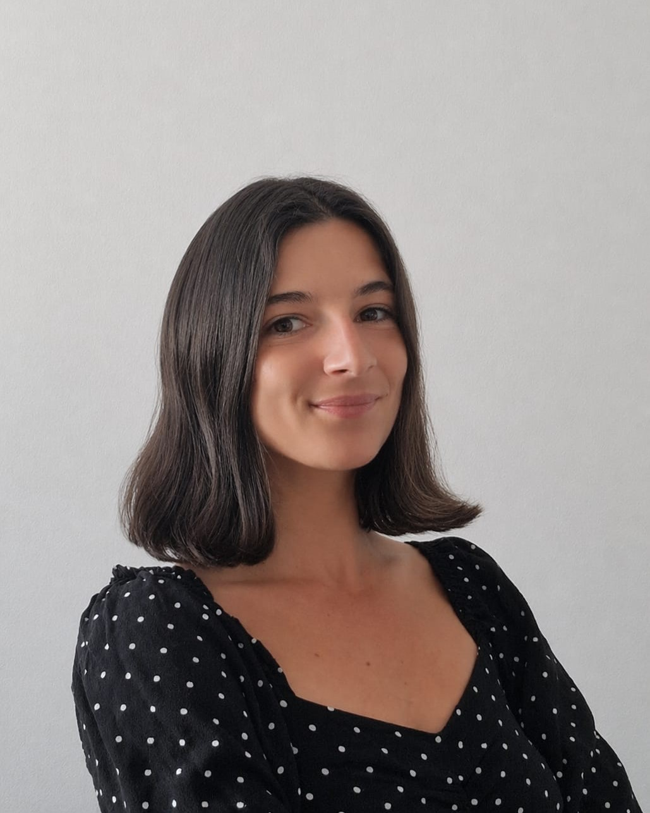

Après plusieurs années en tant qu'experte en communication stratégique, internationale, rédaction et traduction (EN/ES>FR), j'ai choisi d'orienter mon parcours vers la protection animale. J'ai ainsi poursuivi des formations en comportement animal (spécialité canin & félin), en droit des animaux et en plaidoyer européen, afin de mieux appréhender la complexité des enjeux juridiques et scientifiques liés au bien-être animal, et de les traduire en contenus et argumentaires engageants et mobilisateurs dans différents contextes linguistiques et professionnels. Aujourd'hui, j'apporte un angle unique aux structures dédiées aux animaux : une approche stratégique qui aligne compréhension des enjeux, positionnement et dispositifs de communication, pour renforcer leur visibilité, leur crédibilité et leur capacité d'engagement. After several years working as an expert in strategic communications, international communications, writing and translation (EN/ES>FR), I chose to redirect my career towards animal protection. I went on to train in animal behaviour (specialising in canine & feline), animal law and European advocacy, in order to better understand the complexity of the legal and scientific issues surrounding animal welfare, and to translate them into engaging, action-driving content and arguments across different linguistic and professional contexts. Today, I bring a distinctive perspective to animal-focused organisations: a strategic approach that aligns issue understanding, positioning and communications frameworks to strengthen their visibility, credibility and ability to engage.
Comportement animal & protectionAnimal behaviour & welfare
Impactful EU Policy Career — BruxellesImpactful EU Policy Career — Brussels
Programme de formation aux politiques européennes d'impact pour le bien-être animalEU animal welfare policy training programme
ACACED
Attestation de Connaissance pour les Animaux de Compagnie d'Espèces Domestiques · CFPPA 89Certificate of Knowledge for Domestic Companion Animals · CFPPA 89
Diplôme de comportementaliste canin et félinDiploma in Canine and Feline Behaviour
Ethologie EFM Métiers animaliersEthologie EFM Animal Professions School
Certificat de premiers secours animaux domestiquesFirst Aid Certificate for Domestic Animals
Alforme
Diplôme en Droit des AnimauxDegree in Animal Law
Université de ToulonUniversity of Toulon
Communication & languesCommunication & languages
Master en Communication Interculturelle et TraductionMaster's in Intercultural Communication and Translation
ISIT Paris
Diplôme de la Chambre de commerce et d'industrie franco-espagnoleFranco-Spanish Chamber of Commerce and Industry Certificate
ISIT Paris
Diplôme de la Chambre de commerce et d'industrie franco-britanniqueFranco-British Chamber of Commerce and Industry Certificate
ISIT Paris
Diplôme d'interprétation de liaison espagnol › françaisLiaison Interpretation Diploma — Spanish › French
ISIT Paris
Erasmus — Licence Communication et LanguesErasmus — BA Communication and Languages
Universidad de Granada, EspagneUniversity of Granada, Spain
Classe préparatoire littéraire — HypokhâgneHumanities Preparatory Class (Hypokhâgne)
Lycée Descartes, AntonyLycée Descartes, Antony, France
Mémoire de recherche · Diplôme en Droit des Animaux · Université de ToulonResearch dissertation · Degree in Animal Law · University of Toulon
Travail de recherche approfondi consacré à la reconnaissance juridique de l'animal et à la pertinence de la distinction entre animaux domestiques et animaux sauvages en droit français, à la lumière des évolutions scientifiques, sociétales et européennes. Croisement de sources doctrinales, jurisprudentielles et normatives (droit interne, droit comparé et instruments européens), enrichi d'apports issus de l'éthologie, des neurosciences et des sciences du comportement.An in-depth research project on the legal recognition of animals and the relevance of the domestic/wild animal distinction in French law, examined through the lens of scientific, social and European developments. Cross-referencing doctrinal, jurisprudential and normative sources (domestic law, comparative law and European instruments), supplemented by ethology, neuroscience and behavioural sciences.
Mémoire de recherche · Master en Communication Interculturelle et Traduction · ISIT ParisResearch dissertation · Master's in Intercultural Communication and Translation · ISIT Paris
Traduction intégrale d'un rapport scientifique de 3 700 mots publié par la Commission des Sciences de la Communauté valencienne (Espagne), consacré à la disparition progressive des populations d'abeilles. Recherche terminologique approfondie en écologie, éthologie et agronomie pour restituer des données techniques complexes tout en les rendant accessibles à un public francophone non spécialiste. Réflexion sur les enjeux d'équivalence, de localisation et de transmission des savoirs scientifiques dans un contexte européen.Full translation of a 3,700-word scientific report published by the Valencian Community Science Commission (Spain) on the progressive decline of bee populations. Extensive terminological research in ecology, ethology and agronomy to render complex technical data accurately while making it accessible to a non-specialist French-speaking audience. Theoretical reflection on equivalence, localisation and the transmission of scientific knowledge in a European context.
Responsable des annonces d'adoptionAdoption listings manager
Prise en charge de la communication digitale de l'association au service du placement d'animaux abandonnés, principalement des chiens rapatriés de Roumanie. Rédaction, mise en scène et diffusion des annonces d'adoption visant à maximiser le taux de placement, en valorisant chaque animal de manière individualisée. Gestion des demandes et suivi des dossiers d'adoption.Managing the association's digital communications in support of animal adoption, primarily dogs repatriated from Romania. Writing, staging and publishing adoption listings designed to maximise placement rates by showcasing each animal individually. Managing adoption enquiries and following up on applications.
Comportementaliste bénévoleVolunteer animal behaviourist
Suivi comportemental individualisé des chiens en refuge. Socialisation, éducation positive, stimulations cognitives et accompagnement à l'adoptabilité. Évaluation des profils en vue d'un placement adapté.Individual behavioural monitoring of shelter dogs. Socialisation, positive training, cognitive enrichment and support for adoptability. Profile assessment for appropriate placement.
Comportementaliste bénévole · Crète, GrèceVolunteer animal behaviourist · Crete, Greece
Suivi comportemental individualisé des chiens en refuge en Crète. Socialisation, éducation positive, stimulations cognitives et accompagnement à l'adoptabilité, en lien avec les équipes locales du refuge.Individual behavioural monitoring of shelter dogs in Crete. Positive training, socialisation, cognitive enrichment and adoptability support, working alongside the shelter's local team.
Soigneuse bénévoleWildlife care volunteer
Participation aux soins quotidiens des animaux sauvages recueillis, entretien des cages et enclos, suivi des protocoles de soin et de réhabilitation en vue du retour à la nature.Daily care of rescued wildlife, enclosure maintenance, and following care and rehabilitation protocols in preparation for release.
Traductrice et rédactrice bénévoleVolunteer translator and writer
Traductions de contenus pédagogiques et scientifiques à destination du public français (EN › FR), sur les thématiques du bien-être animal, de la conservation et du comportement animal.Translating educational and scientific content for French-speaking audiences (EN › FR), covering animal welfare, conservation and animal behaviour.
Rédactrice web et analyste bénévoleVolunteer web writer and analyst
Conception et rédaction de contenus d'analyse approfondis sur les enjeux de captivité des animaux sauvages, combinant rigueur scientifique et accessibilité pour différents publics.Creating and writing in-depth analytical content on wild animal captivity, balancing scientific rigour with accessibility for a range of audiences.
Membre active du mouvementActive movement member
Engagement autour des problématiques contemporaines à fort impact : bien-être animal, santé globale, risques existentiels. Participation aux événements du mouvement, ateliers de réflexion stratégique et groupes de travail thématiques pour développer et promouvoir des solutions fondées sur les données probantes.Engaged on high-impact contemporary issues including animal welfare, global health and existential risks. Active participation in movement events, strategic thinking workshops and thematic working groups focused on developing evidence-based solutions.
Développement de l'offre ZEWAY (scooters électriques en abonnement) sur la région niçoise, depuis le lancement jusqu'à la structuration commerciale locale. Prospection et acquisition de nouveaux clients B2C et B2B, gestion et fidélisation d'un portefeuille clients, négociation et mise en place de partenariats stratégiques, contribution à la notoriété de la marque et à l'implantation régionale dans le secteur de la mobilité durable urbaine.Spearheaded ZEWAY's electric scooter subscription offer across the Nice area from launch through to full commercial structure. Prospected and onboarded B2B and B2C clients, managed and grew a client portfolio, negotiated strategic partnerships and built regional brand awareness in the urban sustainable mobility sector.
Structuration de l'écosystème digital : refonte complète de l'identité de marque (unification de trois marques historiques), déploiement de la charte éditoriale et terminologique, définition du positionnement concurrentiel. Pilotage de campagnes publicitaires, médias et événementielles (3 000 participants). Gestion stratégique et opérationnelle des réseaux sociaux, production de contenus visuels et rédactionnels, SEO. Conception et rédaction du site web, newsletters hebdomadaires techniques, guides experts de 70 pages. Conceptualisation et gestion de projets vidéo d'experts. Management d'un community manager et d'un chargé de communication.Digital ecosystem structuring: full rebrand merging three legacy brands, deployment of editorial and terminology guidelines. Management of advertising, media and event campaigns (3,000 participants). Strategic and operational social media management, visual and written content creation, SEO. Website copywriting, weekly technical newsletters, 70-page expert guides still used as industry references. Conceptualisation and management of expert video projects. Management of a community manager and a communications officer.
Conception et mise en place de la politique de communication interne et externe. Rédaction de livres blancs de 60 pages sur les logiciels marketing, combinant vulgarisation de contenus techniques IT et positionnement produit sur les marchés français et internationaux. Définition de la ligne éditoriale, réécriture et révision des textes techniques lors de la refonte de la solution. Traduction et révision de l'intégralité des contenus pour les marchés internationaux (FR › EN), supervision de la localisation.Designed and implemented internal and external communications strategy from the ground up. Authored 60-page white papers on marketing software, combining accessible IT content with product positioning for French and international markets. Defined the editorial line and rewrote all technical copy during the platform relaunch. Translated and revised the full content suite for international markets (FR › EN), overseeing localisation.
Création et pilotage de la stratégie de contenus et communication multicanal. Développement du blog d'entreprise et création du blogzine Parages (immobilier, habitat, logement). Recrutement et gestion de plus de 30 rédacteurs internes et externes. Production d'une série de 15 vidéos techniques (chef de projet tournages : réalisation, scripts, direction artistique, stratégie de diffusion et reportings). Pilotage du programme influence avec 3 ambassadrices. Newsletters, gestion CRM, social media management et communication de crise.Built and led a multichannel content and communications strategy. Launched the company blog and created Parages, an editorial magazine covering housing and real estate. Recruited and managed 30+ internal and freelance writers. Produced a series of 15 technical videos (project lead: filming, scripts, art direction, distribution strategy and reporting). Led an influencer programme with three brand ambassadors. Managed newsletters, CRM, social media and crisis communications.
Traduction de textes généraux (tourisme, histoire, éducation) et spécialisés (économie, informatique) en espagnol et en français. Gestion de projets de traduction, suivi des dossiers clients et des campagnes d'interprétation.Translated general texts (tourism, history, education) and specialised content (economics, IT) between Spanish and French. Managed translation projects, client accounts and interpretation assignments.
Gestion de projets de traduction dans différentes combinaisons linguistiques. Proofreading ES›FR / EN›FR, suivi des dossiers, utilisation du CRM, graphisme et logiciels traductologiques.Managed translation projects across multiple language pairs. Proofreading ES›FR / EN›FR, client file management, CRM, design software and CAT tools.
Stage au sein du département communication et marketing de cette entreprise britannique spécialisée dans les services publics numériques. Participation à la production de contenus, gestion des supports de communication et appui aux campagnes marketing.Internship within the communications and marketing department of this UK-based digital public services company. Contributed to content production, managed communications materials and supported marketing campaigns.